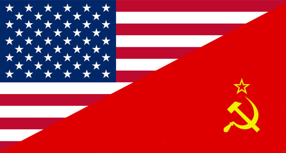

Inleiding

Vragen
1. Waarom werden Rusland en Amerika weer vijanden nadat ze samen in de Tweede Wereld Oorlog tegen nazi Duitsland gestreden hadden?
2. Wat hield de Dominotheorie in, en waarom was Amerika hier zo bang voor?
3.Hoe kwam het dat de Verenigde Staten zo'n welvarend land was aan het eind van de tweede wereld oorlog en aan het begin van de Koude Oorlog?
4.Wat was de voornaamste reden van de Verenigde staten om het Marshallplan uit te voeren? Wat dachten ze hiermee te bereiken?
5.
6.
7. Wat was er zo bijzonder aan de film:Dr. Strangelove or: How I Learned to Stop Worrying and Love the Bomb? Waardoor was het anders dan andere film die over de Koude Oorlog gingen?
8.Waaraan kon je de stijl van Stanley Kubrick goed herkennen? Noem 3 dingen.
9.Wat is een exil schrijver?
10.Welke probleem werd er met het gedicht “Fall 1961” aangetoond?